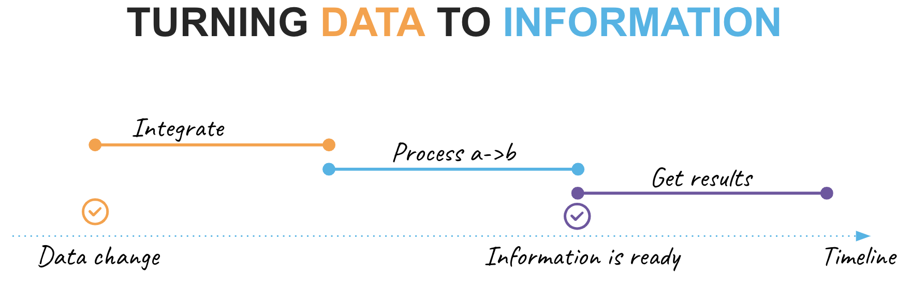
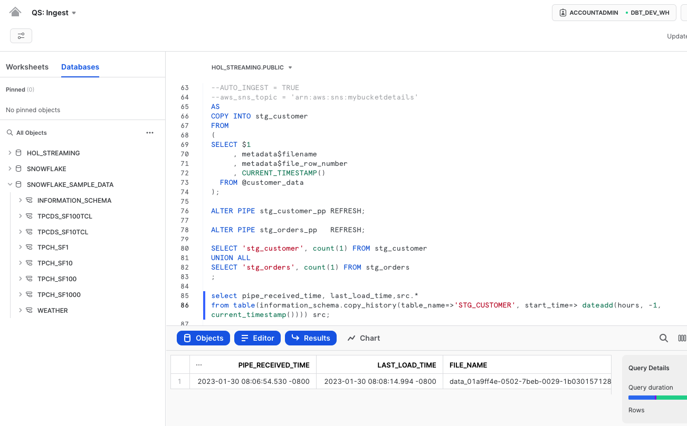
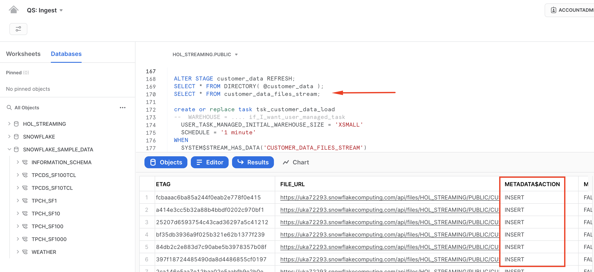
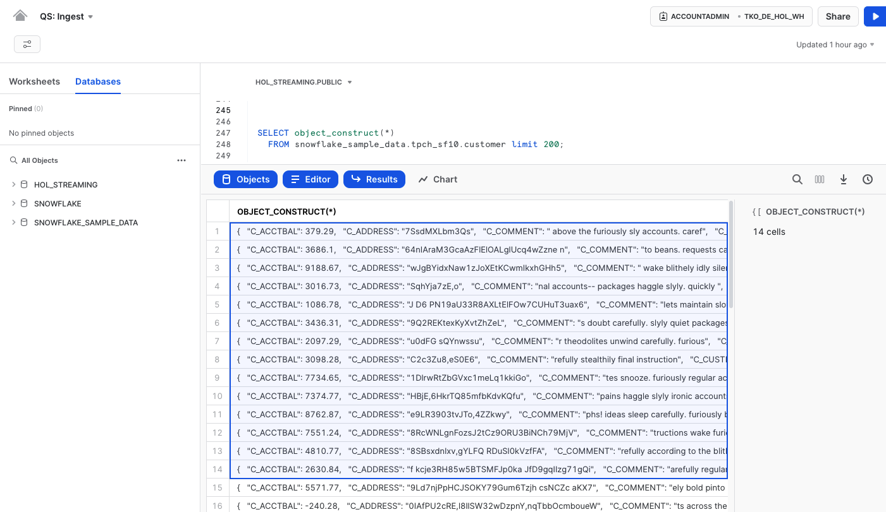

In today's fast-paced business environment, companies are facing increasing competition. Those that can effectively leverage the value of their data to drive improved outcomes will have the upper hand. With the ever-increasing volume and availability of data from sources such as IoT devices, mobile devices, and websites, there is a growing need for real-time data processing.
This quickstart is a part of a series covering various aspects of wваorking with Streaming Data in Snowflake:
- Streaming Data Integration with Snowflake (this very guide) - This guide will focus on design patterns and building blocks for data integration within Snowflake
- Popular Kafka Integration options with Snowflake(coming up later!) - Kafka is a widely used message broker among customers. This guide will provide examples using common Kafka deployment configurations. In the meantime, please check out our quickstart on Streaming Snowpipe with Amazon MSK.
- Streaming Use cases(coming up later!) - This guide will share examples of common streaming use cases such as Change Data Capture (CDC), near real-time data sharing and others
- Streaming with Snowflake. Post-load options(coming up later!) - The process of loading data is not the end of the pipeline. This guide will cover various options available in Snowflake for efficient post-integration processing to prepare data for consumption
Prerequisites
Prerequisites for this guide include:
- Familiarity with Snowflake, basic SQL knowledge, and understanding of Snowflake objects such as Snowsight UI
- Snowflake account. Existing or Snowflake Free Trial - Registrants of the virtual hands-on lab need to sign up for a free trial. Please sign up using an email address that hasn't been used previously
- Additionally, for Kafka step we will need the following installed locally (steps to install are described in the corresponding section):
- open-source Apache Kafka 2.13-3.1.0
- Snowflake Kafka Connector 1.9.1.jar (or newer version)
- openJDK <= 15.0.2
- homebrew for mac users
What You'll Learn
By the end of this guide, readers will learn about:
- Options available for working with streaming data
- Ways to use Snowpipe, COPY or Streaming Snowpipe
What You'll Build
- Simple pipelines for various types of Streaming data

Before we begin, let's take a few minutes to clarify the terminology as this topic can become quite confusing. It is crucial that we are all on the same page when discussing the variations in design patterns.
Data Lifecycle
In this guide, we will outline the following key phases of the data lifecycle:
- Data Change: This refers to a point in our timeline when events occur in the upstream system we integrate with
- Integrate: This phase involves activities related to making a data change available for use in Snowflake
- Process a->b: assuming data needs to be enriched/transformed before it can be used, this phase is for changing data from its initial state ‘a' to a new state ‘b'
- Information is ready: A point in our timeline when ready-to-consume information is available for consumption at the rest point
- Get results: The final step, in which the consumer retrieves or is pushed new portions of information
Integration & processing frequency
Another crucial aspect to consider is the processing frequency, which ultimately affects the latency between a data change event and its reflection in the final results. In real-world scenarios, different data products within an organization may have different requirements for availability latency. To ensure effective data management, it is best practice to catalog and publish this characteristic in your platform's data catalog. This not only helps with discovery, but also with justifying improvements, whether it is reducing latency or transitioning to a more cost-effective integration technique.
Additionally, this is where the term "real-time" often comes into play!
For the purpose of this guide, let's establish the following terminology.
- Batch: Data is collected and stored over a period of time (such as hours or days) before being loaded and processed.
- Micro-batch: Data is collected in small intervals (such as minutes) before being loaded and processed.
- Continuous: Data item is loaded and processed individually and as soon as it is received.
- Real-time: Data is processed and made available for use immediately after it is collected
Synchronous vs Asynchronous processing
It is important to differentiate between these two.
In synchronous processing, a task is executed and the program/script/pipeline must wait for it to complete before moving on to the next step. This means that the execution of the program is blocked until the task is finished and that next step will start immediately after the previous one completed.
It is common opinion that sync processing is offering better simplicity from orchestration/logging/troubleshooting perspective as there is one master job process that controls the pipeline execution end-to-end.
In asynchronous processing, steps are executed independently of one another and the program can continue to execute other tasks while one is still in progress, so the program execution is not blocked.
Whilst delivering great possibilities for parallelization & efficiency, async processing architectures often become a little more complex when it comes to monitoring / orchestration / troubleshooting as the state of the end-to-end pipeline is passed from one service to another.
Next
This is excellent, but how does it relate to Snowpipe, the COPY command, and other fundamental tools that Snowflake offers? Let's discuss the available options in the next section!

Snowflake offers a variety of building blocks for working with streaming data. There is no one-size-fits-all approach, so it is important to understand the differences in order to effectively address requirements.
Let's use the diagram above to talk about some design options. Here we see three stages of the data lifecycle we discussed in the previous section: integration -> processing -> consumption. Horizontally, five sections representing common patterns of working with streaming data are shown.
File-base Integration
Data needs to be accessible in Snowflake Cloud in order to work with it. This typically involves transferring data to a public cloud bucket, but Snowflake also supports integration with ‘S3-like' storage systems and can access data stored in customer-managed data centers. Data files can be created in cloud environment or easily uploaded from local environment using cloud-native solutions or Snowflake drivers/SnowSQL with simple SFTP-like commands: PUT/GET/LIST/DEL. Snowflake uses a stage object to access data stored in buckets, which could be external(customer managed) or internal(Snowflake managed).
This is the important integration milestone. As we have data files in the stage, from this time on, data is accessible for analysis and we have different options to optimize access by completing the integration phase:
- Query stage data directly. This is commonly used for profiling incoming data, but can also deliver fast insights without the need for loading and optimizing for access. Technically this could be a direct query or a view or external table.
- Load using COPY, a synchronous process that allows you to assign a virtual warehouse of various sizes(XS->6XL) to match the scale of your integration task. This process automatically creates metadata for file load history, allows for error tolerance thresholds, and gives you full control over compute allocation. It is ideal for bulk load operations. The COPY command could be initiated from an external process/orchestrator or from user managed task or serverless task.
- Load using Snowpipe. This is an asynchronous process that utilizes automatically scaling, Snowflake-managed compute resources for data loading. Requests to load via Snowpipe can be submitted through the Snowpipe REST API or set up for automatic ingestion using Snowpipe Auto-ingest setup, which leverages cloud storage notifications. Load requests are queued and processed on a frequent basis. Snowpipe is a great option for automating the integration of files and simplifying the management of compute resources when data file influxes are less predictable.
These options are typically the best choice when the upstream system you are integrating with supplies data in the form of files. It is highly recommended to familiarize yourself with the best practices section in the corresponding documentation when using any of the above options, especially about recommended file sizes.
Streaming Integration
When the upstream system is able to push streaming data via an API or when using a Kafka streaming platform, there are other options to consider:
- Snowflake Connector for Kafka. Snowflake Kafka connector is available as open source package for Kafka Connect cluster or run in Confluent managed platform. Snowflake's Kafka connector is a simple solution that allows you to easily read data from Kafka topics and write it to Snowflake tables, with all necessary automation including target table creation. The connector reads data from the topic, writes it to a file in an internal Snowflake stage, and then calls the Snowpipe API(see above) to submit the integration request. This provides a seamless integration of data from Kafka to Snowflake with minimal setup effort.
- Snowpipe Streaming API writes rows of data to Snowflake tables, unlike bulk data loads or Snowpipe, which write data from staged files. This architecture results in lower load latencies, with corresponding lower costs for loading similar volumes of data. The Streaming API is intended to complement Snowpipe, not replace it. Currently Snowpipe Streaming service is implemented as a set of APIs for the Snowflake Ingest SDK available in Java. API requires a custom Java application interface capable of pumping rows of data and handling encountered errors. This can offer much lower latency and greater efficiency for both steady streams of data and bursts of data.
- Snowflake Connector for Kafka With Snowpipe Streaming. Another option for loading data from Kafka into Snowflake is to use the Snowpipe Streaming feature, which is available as a newer version of the Kafka Connect package and controlled by configuration. Unlike the Kafka Connector for Snowpipe, which writes data to temporary staged files before calling the Snowpipe API, the Snowpipe Streaming feature writes rows of data directly to Snowflake tables when a specified flush buffer threshold (time, memory, or number of messages) is reached. Efficiency benefits are similar to using the Snowpipe Streaming API.
Integration with Data Sharing
Lastly, integration using Snowflake Data Sharing is superior in terms of its characteristics, despite being listed last. With Snowflake Data Sharing, consumers have the ability to access datasets published by providers live. Once the data share is configured, consumers can query new data immediately whenever changes occur on the provider side.
Additionally, Snowflake Secure Data Sharing is a key component used within the Snowflake Cloud Marketplace, which offers additional data cataloging, making it easier for consumers to discover and access datasets, as well as providing providers with a range of metrics and controls. To take advantage of these features, it is recommended to explore the thousands of listings available on the Snowflake Marketplace to see what datasets can be added to your analytical landscape, all with minimal latency and effortless integration.
Hope reviewing these patterns will help you to choose the right option for your next data pipeline. Seeing is believing! Let's see them in action.
In this section, we will construct a pipeline that is prepared to integrate a stream of data that arrives as files. The steps are as follows:
- Establish the environment
- Generate the input data files
- Integrate the data using Snowpipe
- Evaluate the results
For the sake of simplicity, we will manually notify Snowpipe of the availability of new files to ingest in the stage. However, in real-life scenarios, it is more efficient to automate this process using the Snowpipe auto-ingest option and take advantage of storage events. If you'd like to experience this in action, the quickstart guide may be helpful: Snowpipe quickstart
Let's login to Snowflake account (as agreed, we are going to use the ACCOUNTADMIN role for simplicity) and run the following:
CREATE OR REPLACE DATABASE hol_streaming;
USE DATABASE hol_streaming;
CREATE OR REPLACE WAREHOUSE hol_streaming_wh WITH WAREHOUSE_SIZE = 'XSMALL' MIN_CLUSTER_COUNT = 1 MAX_CLUSTER_COUNT = 1 AUTO_SUSPEND = 60;
Next, let's create staging tables for our data loading. This syntax should be very familiar with anyone working with databases before. It is ANSI SQL compliant DDL, with probably one key exception - for stg_customer we are going to load the full payload of JSON into raw_json column. For this, Snowflake has a special data type VARIANT.
As we load data we also going to add some technical metadata, like load data timestamp, row number in a file.
CREATE OR REPLACE TABLE stg_customer
(
raw_json VARIANT
, filename STRING NOT NULL
, file_row_seq NUMBER NOT NULL
, ldts STRING NOT NULL
);
CREATE OR REPLACE TABLE stg_orders
(
o_orderkey NUMBER
, o_custkey NUMBER
, o_orderstatus STRING
, o_totalprice NUMBER
, o_orderdate DATE
, o_orderpriority STRING
, o_clerk STRING
, o_shippriority NUMBER
, o_comment STRING
, filename STRING NOT NULL
, file_row_seq NUMBER NOT NULL
, ldts STRING NOT NULL
);
We will now create sample data by extracting a portion of our TPC-H sample dataset and storing it in files. To begin, we will set up two stages for each type of data, orders and customers. These stages can either be internal or external, depending on your use case, offering a wide range of possibilities.
CREATE OR REPLACE STAGE customer_data FILE_FORMAT = (TYPE = JSON);
CREATE OR REPLACE STAGE orders_data FILE_FORMAT = (TYPE = CSV) ;
Generate and unload sample data:
COPY INTO @customer_data
FROM
(SELECT object_construct(*)
FROM snowflake_sample_data.tpch_sf10.customer limit 10
)
INCLUDE_QUERY_ID=TRUE;
COPY INTO @orders_data
FROM
(SELECT *
FROM snowflake_sample_data.tpch_sf10.orders limit 1000
)
INCLUDE_QUERY_ID=TRUE;
There are couple of things going on. We are utilizing the Snowflake object_construct function to quickly create an object/document from a subset of rows for customer data and then loading it into the customer_data stage.
For the orders data, we will be extracting it into compressed CSV files. While there are many other options available in the COPY INTO stage construct, we are using the INCLUDE_QUERY_ID option to make it easier to generate new incremental files as we will be running these commands repeatedly without the need to worry about file overriding.
You can now run the following to validate that the data is now stored in files:
list @customer_data;
SELECT METADATA$FILENAME,$1 FROM @customer_data;

Next, we are going to setup Snowpipe to load data from files in a stage into staging tables:
CREATE OR REPLACE PIPE stg_orders_pp
AS
COPY INTO stg_orders
FROM
(
SELECT $1,$2,$3,$4,$5,$6,$7,$8,$9
, metadata$filename
, metadata$file_row_number
, CURRENT_TIMESTAMP()
FROM @orders_data
);
CREATE OR REPLACE PIPE stg_customer_pp
AS
COPY INTO stg_customer
FROM
(
SELECT $1
, metadata$filename
, metadata$file_row_number
, CURRENT_TIMESTAMP()
FROM @customer_data
);
ALTER PIPE stg_customer_pp REFRESH;
ALTER PIPE stg_orders_pp REFRESH;
Once this done, you should be able to see data starting to appear in the target tables:
SELECT 'stg_customer', count(1) FROM stg_customer
UNION ALL
SELECT 'stg_orders', count(1) FROM stg_orders
;

If you executed the query above quickly within a few seconds after refreshing the pipes, you may have noticed that the data in the target tables did not appear immediately. This is due to the asynchronous nature of Snowpipe loading that was discussed in the previous section. Once the data is loaded, you can also observe the difference in time between when Snowpipe was notified about the new file load request and when it was actually loaded.
select pipe_received_time, last_load_time,src.*
from table(information_schema.copy_history(table_name=>'STG_CUSTOMER', start_time=> dateadd(hours, -1, current_timestamp()))) src;

It's important to keep in mind that the asynchronous processing of Snowpipe provides greater efficiency, but also means that data may not appear immediately after a load request. However, you can see the details of credit usage for each load operation to gauge the efficiency of the process:
select *
from table(information_schema.pipe_usage_history(
date_range_start=>dateadd('hour',-12,current_timestamp()),
pipe_name=>'STG_CUSTOMER_PP'))
union all
select *
from table(information_schema.pipe_usage_history(
date_range_start=>dateadd('hour',-12,current_timestamp()),
pipe_name=>'STG_ORDERS_PP'));

Here's a challenge for you. In the scripts we created earlier, we only loaded a small amount of data, around 1000 rows. Try generating more files based on sample data and observe how Snowpipe can handle a larger influx of data.
Also, if you'd like to learn more about SnowPipe and levelrage Cloud Storage Events for auto-ingest setup please have a look in our Getting Started with Snowpipe quickstart.
Now that we have seen Snowpipe, let's run a similar experiment with COPY command. For this, let's reset the environment:
CREATE OR REPLACE DATABASE hol_streaming;
CREATE OR REPLACE TABLE stg_customer
(
raw_json VARIANT
, filename STRING NOT NULL
, file_row_seq NUMBER NOT NULL
, ldts STRING NOT NULL
);
CREATE OR REPLACE TABLE customer_target
(
c_acctbal NUMBER
, c_name STRING
, c_mktsegment STRING
);
CREATE OR REPLACE STAGE customer_data FILE_FORMAT = (TYPE = JSON) directory = (enable = true);
CREATE OR REPLACE STREAM customer_data_files_stream ON STAGE customer_data ;
COPY INTO @customer_data
FROM
(SELECT object_construct(*)
FROM snowflake_sample_data.tpch_sf10.customer
-- LIMIT 10
)
INCLUDE_QUERY_ID=TRUE;

Note, this time we did a few little tweaks:
- we enabled directory table on our stage to illustrate the idea of using it in a stream
- we created a stream on the directory table
- by commenting the "LIMIT 10" we are going to create much more files by offloading about 1.5Mn rows
Manual process
Let's now carry out the load using the COPY command. The COPY command will verify the files in the stage against the file load history for the target table and load all of them in parallel using the virtual warehouse in use during the session.
If there are more files to be loaded, we can easily increase the virtual warehouse size (from XS to 6XL) to speed up the process as needed by the business. This gives developers the greatest degree of control over the compute resources allocated to this operation.
BEGIN TRANSACTION;
COPY INTO stg_customer
FROM
(
SELECT $1
, metadata$filename
, metadata$file_row_number
, CURRENT_TIMESTAMP()
FROM @customer_data
);
--
MERGE INTO customer_target
USING
(
SELECT raw_json:C_ACCTBAL::number src_c_acctbal
, raw_json:C_NAME::string src_c_name
, raw_json:C_MKTSEGMENT::string src_c_mktsegment
FROM stg_customer
)
ON ( customer_target.c_name = src_C_NAME
AND customer_target.c_name = src_C_MKTSEGMENT
)
WHEN MATCHED THEN UPDATE SET customer_target.c_acctbal = src_c_acctbal
WHEN NOT MATCHED THEN INSERT (C_acctbal,c_name,c_mktsegment) VALUES (src_c_acctbal, src_c_name, src_c_mktsegment)
;
--
COMMIT;
The COPY operation is also transactionally controlled. To demonstrate synchronous processing, we have added a subsequent step in the multi-statement transaction. Once the data from the files is loaded into the stg_customer table, its JSON content will be immediately merged into the customer_target table. From a developer's perspective, this provides a great simplification as the second command will automatically start as soon as the COPY finishes.
Automation using Snowflake tasks
Now such COPY command can be issued by an external orchestrator, such as bash/batch script or 3rd party products like Airflow. What if we want to leverage Snowflake to automate use of COPY command for our stream of input data?
Let's take a step back and discuss the new directory table construct we introduced. COPY and Snowpipe both automatically track the load history to prevent accidental reloading of the same file. However, we only want to run compute when there are new files available. One way to achieve this with the COPY command is to use the directory table and stream, which allows our integration process to start only when there are new entries (new files) in the stream.
ALTER STAGE customer_data REFRESH;
SELECT * FROM DIRECTORY(@customer_data);
SELECT * FROM customer_data_files_stream;
 Please note, in this example we are explicitly refreshing the STAGE, but in a real-life scenario, this could be integrated with cloud storage event notifications.
With this, we can create a task that every minute will be checking if there are new files detected in the stream and will be loading files using COPY command into the target table.
CREATE OR REPLACE TASK tsk_customer_data_load
-- WAREHOUSE = .... if_I_want_user_managed_task
USER_TASK_MANAGED_INITIAL_WAREHOUSE_SIZE = 'XSMALL'
SCHEDULE = '1 minute'
WHEN
SYSTEM$STREAM_HAS_DATA('CUSTOMER_DATA_FILES_STREAM')
AS
COPY INTO stg_customer
FROM
(
SELECT $1
, metadata$filename
, metadata$file_row_number
, CURRENT_TIMESTAMP()
FROM @customer_data
);
ALTER TASK tsk_customer_data_load RESUME;
EXECUTE TASK tsk_customer_data_load;
Finally, as always it is possible to measure the efficiency of your data ingestion process. Snowflake automatically collects metadata about number of rows inserted, files loaded, size as well as detailed information of your compute usage. Whether it is serverless compute like serverless tasks & snowpipe or user-managed compute with virtual warehouses - you are always in control.
You can access this information via SnowSight UI 
For those who prefer programmatic access, as is typical with Snowflake, there is a data point that can be queried:
SELECT *
FROM TABLE(information_schema.serverless_task_history(
date_range_start=>dateadd(d, -7, current_date),
date_range_end=>current_date,
task_name=>'tsk_customer_data_load'));

Now that we covered most common file-based integration approaches for data that streams down into your warehouse let's talk about Streaming Snowpipe in the next section.
The Snowpipe Streaming service is implemented as a set of APIs for the Snowflake Ingest SDK, which can be downloaded from the Maven Central Repository. The APIs require a custom Java application interface capable of pushing rows of data through one or more channels and handling encountered errors.
Instead of building a custom Java application, we will leverage the Snowflake connector for Kafka, as all Snowpipe Streaming API routines are neatly packaged in the connector and easy to use.
When the Kafka connector comes online, it opens a channel corresponding to a partition in the Kafka topic and begins reading records from the Kafka partition. The connector then calls the API and makes an insertRows method request with the required offset.
As always, in our documentation you can find more details about the use of Snowpipe Streaming and Snowflake Connector for Kafka.
Snowflake Connector for Kafka
For testing this set up locally, we will need:
- open-source Apache Kafka 2.13-3.1.0 installed locally
- Snowflake Kafka Connector 1.9.1.jar (or new version)
- openJDK <= 15.0.2
- a Snowflake user for streaming snowpipe with ssh key defined as authentication method
Snowflake set up
Please follow the instruction to generate the ssh key-pair following the instruction here
Now let's log in to Snowflake and create a separate user that we are going to use for Streaming Snowpipe. Please remember to replace <YOURPUBLICKEY> with the corresponding details. Please note, in this case you need to remove the begin/end comment lines from the key file (e.g. —–BEGIN PUBLIC KEY—–) but please keep the new-line characters.
create user snowpipe_streaming_user password='', default_role = accountadmin, rsa_public_key='<YOURPUBLICKEY>';
grant role accountadmin to user snowpipe_streaming_user;
Local set up
Let's open terminal and run the following commands to download Kafka and Snowflake kafka connector:
mkdir HOL_kafka
cd HOL_kafka
curl https://archive.apache.org/dist/kafka/3.3.1/kafka_2.13-3.3.1.tgz --output kafka_2.13-3.3.1.tgz
tar -xzf kafka_2.13-3.3.1.tgz
cd kafka_2.13-3.3.1/libs
curl https://repo1.maven.org/maven2/com/snowflake/snowflake-kafka-connector/1.9.1/snowflake-kafka-connector-1.9.1.jar --output snowflake-kafka-connector-1.9.1.jar
Create file config/SF_connect.properties with the following config. Please remember to replace <YOURACCOUNT> & <YOURPRIVATEKEY> with the corresponding details. Also, please note when adding private key you need to remove all new line characters as well as beginning and ending comments (e.g —–BEGIN PRIVATE KEY—–):
name=snowpipe_streaming_ingest
connector.class=com.snowflake.kafka.connector.SnowflakeSinkConnector
tasks.max=1
topics=customer_data_topic
snowflake.topic2table.map=customer_data_topic:customer_data_stream_stg
buffer.count.records=1
buffer.flush.time=10
buffer.size.bytes=20000000
snowflake.url.name=<YOURACCOUNT>.snowflakecomputing.com:443
snowflake.user.name=SNOWPIPE_STREAMING_USER
snowflake.private.key=<YOURPRIVATEKEY>
snowflake.database.name=HOL_STREAMING
snowflake.schema.name=PUBLIC
snowflake.role.name=ACCOUNTADMIN
snowflake.ingestion.method=SNOWPIPE_STREAMING
key.converter=org.apache.kafka.connect.json.JsonConverter
value.converter=org.apache.kafka.connect.json.JsonConverter
key.converter.schemas.enable=false
value.converter.schemas.enable=false
For those of you using homebrew as a package manager for you mac, can easily install openjdk package of the required version using the following command:
brew install openjdk@15
Alternatively, openjdk can be set up following this instruction.
Start up
Great! Now this out of the way, let's start the environment. Please note, for this step you might get errors if using JDK>=v15. And you might need a few separate terminal sessions for this:
Session 1:
bin/zookeeper-server-start.sh config/zookeeper.properties
Session 2:
bin/kafka-server-start.sh config/server.properties
Session 3:
bin/connect-standalone.sh ./config/connect-standalone.properties ./config/SF_connect.properties
Test!
Excited? Everything seems ready. Next step is seeing the system in action.
Please open another terminal session (Session 4) and run the kafka-console-producer. This utility is a simple way to manually put some data into the topic.
bin/kafka-console-producer.sh --topic customer_data_topic --bootstrap-server localhost:9092
Let's get back to Snowsight and run the following query to generate some sample customer data in json format:
SELECT object_construct(*)
FROM snowflake_sample_data.tpch_sf10.customer limit 200;

Next, copy a set of records from the dataset in Snowsight (use Command + C or right-click and select ‘Copy') and paste them into the terminal window (kafka-console-producer) that you just opened. Please note, if you select the whole table/column(instead of selecting some rows), the row header ("OBJECT_CONSTRUCT(*)" in this example) will be added to the clipboard. If you do so, please make sure to remove it before pasting it to the kafka-console-producer window.
What occurs next is that the console utility will push the data into the topic. The Snowflake Kafka sink connector, utilizing Snowpipe streaming, will then push it into the target table. And yes, that's correct, we don't need to create the target table manually as the Kafka connector does it automatically.
On the Snowflake side, the data lands in a table with two columns:
- record_metadata (VARIANT)
- record_content (VARIANT) - the actual payload
Thanks to Snowflake's exceptional support for querying semi-structured data, working with this content is very straightforward. Here's a sample query:
select TO_TIMESTAMP(TO_NUMBER(record_metadata:CreateTime),3) create_timestamp
, src.record_content:C_ACCTBAL::NUMBER C_ACCTBAL
, src.record_content:C_NAME::STRING C_NAME
, src.record_content
from customer_data_stream_stg src;
 As you can see, Snowpipe Streaming is a fantastic new capability that can significantly reduce integration latency and improve pipeline efficiency. It also opens up new opportunities for your business, providing near-real-time insights and operational reporting, among other benefits.
As you can see, Snowpipe Streaming is a fantastic new capability that can significantly reduce integration latency and improve pipeline efficiency. It also opens up new opportunities for your business, providing near-real-time insights and operational reporting, among other benefits.
For those of you who would like to know more about use of Snowpipe Streaming in Amazon MSK (Managed Streaming for Apache Kafka) please have a look at this Quickstart!
Hope you enjoyed this section. Let's summarize and provide some pointers to continue refining your streaming data pipeline skills.
To clean up the objects we created for this lab, let's get back to SnowSight and run the following SQL:
USE ROLE ACCOUNTADMIN;
DROP DATABASE hol_streaming;
DROP WAREHOUSE hol_streaming_wh;
DROP USER snowpipe_streaming_user;
And of course delete the HOL_kafka you created in the operating system.
So, here you have it!
What we've covered
We discussed a lot of important aspects in this quickstart:
- batch, micro-batch, continuous, real-time integration & processing
- synchronous and asynchronous design patterns
- discussed options of using Snowflake build primitives for working with Streaming data, including direct stage queries, COPY, Snowpipe, Streaming Snowpipe
- built three examples of getting sample streaming data into Snowflake target tables
Next steps
Hope now understanding various options at your fingertips your next data pipeline will be done easier and more efficiently. Please stay tuned for the upcoming quickstarts in Snowflake Streaming series:
- Streaming Data Integration with Snowflake (this very guide) - This guide will focus on design patterns and building blocks for data integration within Snowflake
- Popular Kafka Integration options with Snowflake(coming up later!) - Kafka is a widely used message broker among customers. This guide will provide examples using common Kafka deployment configurations
- Streaming Use cases(coming up later!) - This guide will share examples of common streaming use cases such as Change Data Capture (CDC), near real-time data sharing and others
- Streaming with Snowflake. Post-load options(coming up later!) - The process of loading data is not the end of the pipeline. This guide will cover various options available in Snowflake for efficient post-integration processing to prepare data for consumption